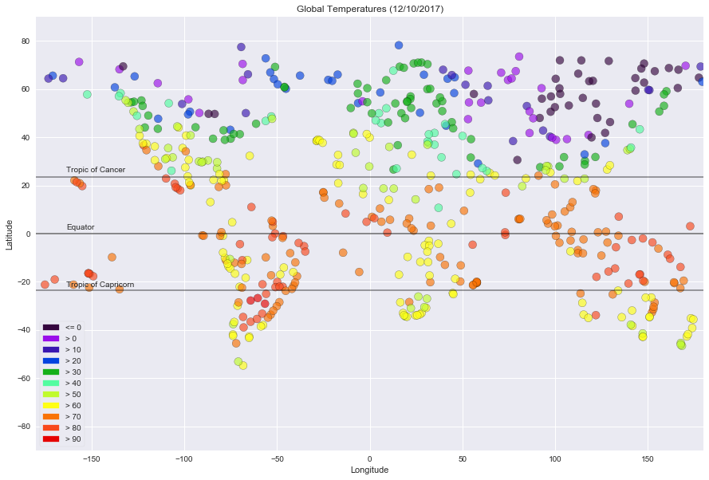

Global Temperature
Observations
The process selected 533 unique cities. On 12/10/2017, the highest temperature was recorded in Santiago del Estero, Argentina at 99.73˚F. The lowest temperature recorded was Ust-Nera, Russia at -44.73˚F. Generally, the highest global temperatures were within the tropics. (The band of latitudes ranging from 23.5˚ south (Tropic of Capricorn) to 23.5˚ north (Tropic of Cancer.)) The two highest temperature points were measured south of the Tropic of Capricorn, which was consistent with the season, as we were approaching the summer solstice in the Southern Hemisphere. Temperatures dropped sharply north of the Tropic of Cancer; all of the below freezing (32˚F) temperatures were in this region. This was consistent with the season, as we were approaching the winter solstice in the Northern Hemisphere.